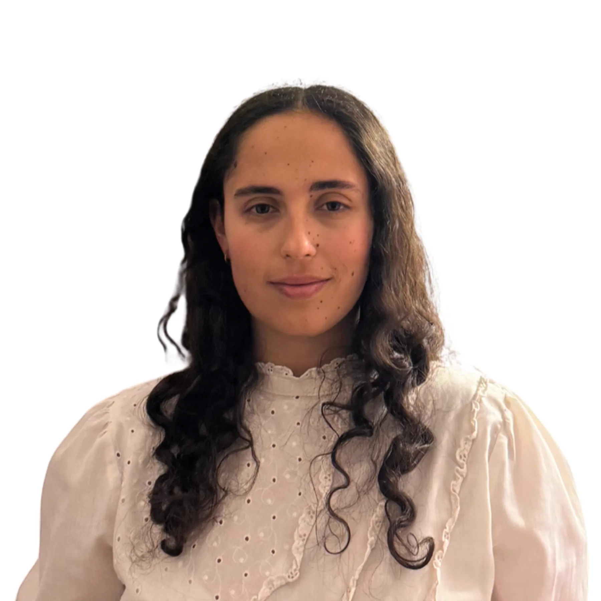
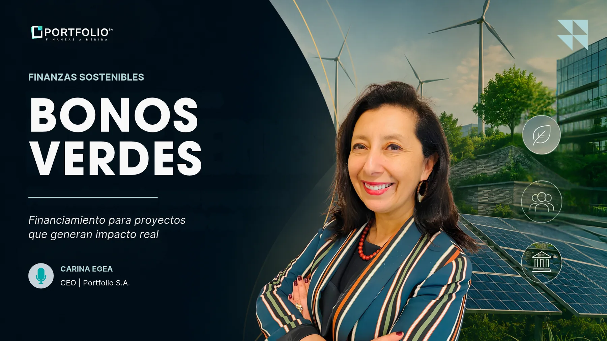
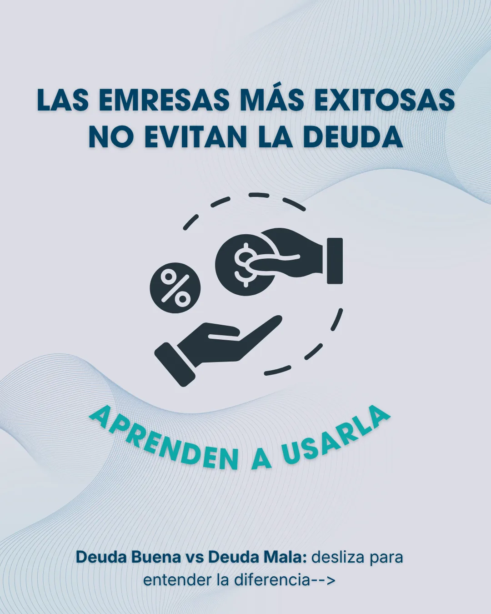
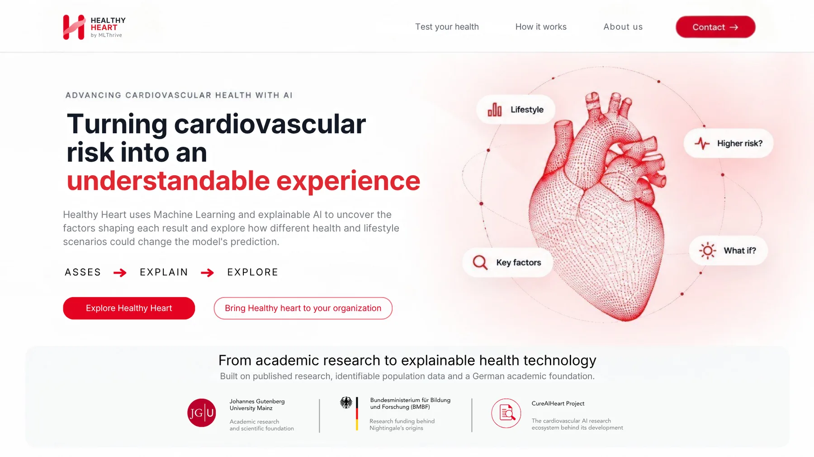
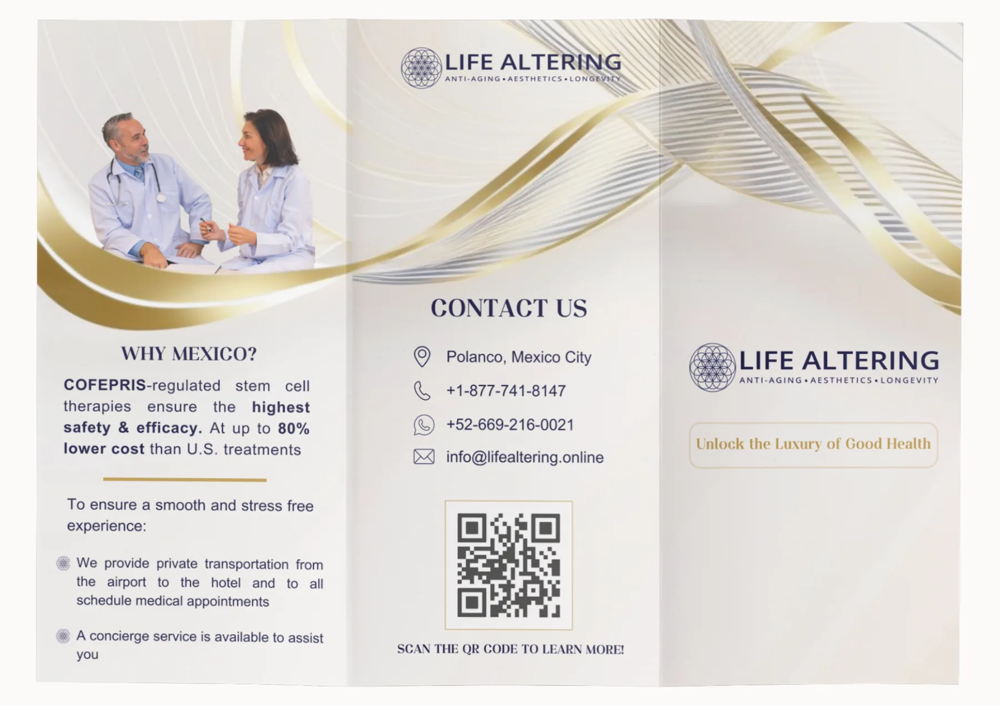
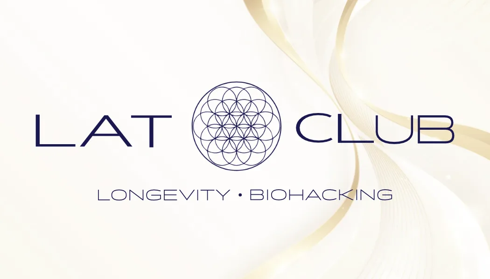
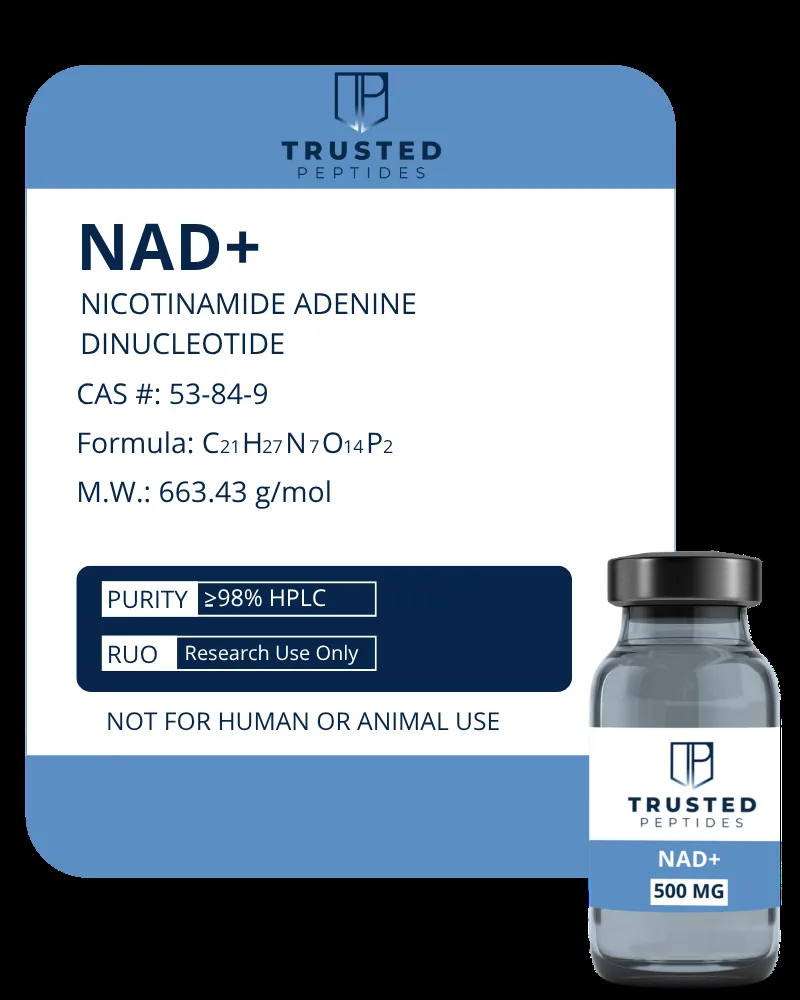
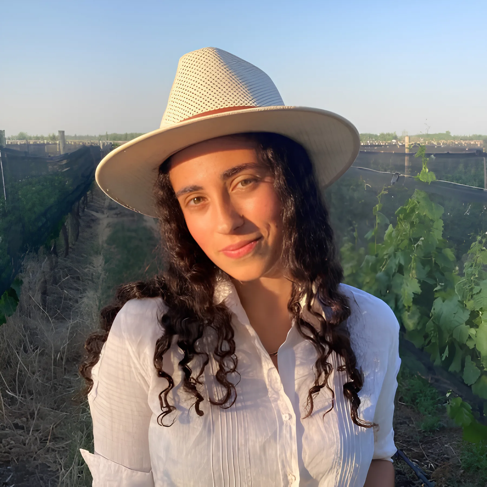

The world can be reinvented by words
El mundo puede reinventarse con palabras
I turn complex ideas into clear, strategic communication across finance, science, health, business and innovation.
Transformo ideas complejas en comunicación clara y estratégica para los sectores de finanzas, ciencia, salud, negocios e innovación.
I’ve always been drawn to the power of words, not just to explain ideas, but to move people. Today, I use communication as a strategic tool to turn complex topics into stories that feel clear, relevant and meaningful.
Siempre me atrajo el poder de las palabras, no solo para explicar ideas, sino también para generar una emoción. Hoy trabajo con la comunicación como herramienta estratégica para transformar temas complejos en historias claras, relevantes y significativas.

From complexity to clarity.
De la complejidad a la claridad.
I don’t start with the format. I start with the message. My work begins by understanding the business goal, the audience and the complexity behind the topic. From there, I define the narrative, choose the right channel and turn the idea into content that feels clear, relevant and useful.
No empiezo por el formato. Empiezo por el mensaje. Mi trabajo comienza entendiendo el objetivo del negocio, la audiencia y la complejidad detrás del tema. Desde ahí, defino la narrativa, elijo el canal adecuado y convierto la idea en contenido claro, relevante y útil.
Strategy turned into content.
Estrategia convertida en contenido.
A selection of work across strategy, storytelling, editorial content, design and video.
Una selección de trabajos de estrategia, storytelling, contenido editorial, diseño y video.
Short-form video content
Educational financial content adapted into vertical video. End-to-end production: strategy, script, filming, editing, copywriting and publishing.
Contenido financiero educativo adaptado a video vertical. Producción end-to-end: estrategia, guion, grabación, edición, copy y publicación.

Long-form market video
A longer-form video piece built to explain bond-related market context in a more in-depth way, while keeping the tone clear and accessible.
Una pieza audiovisual de formato largo pensada para explicar el contexto de mercado vinculado a bonos de forma más profunda, manteniendo un tono claro y accesible.
Open on YouTube ↗Abrir en YouTube ↗
Social storytelling
Concept-driven carousel content designed to simplify financial ideas and connect them with real business decisions.
Carruseles conceptuales diseñados para simplificar ideas financieras y conectarlas con decisiones reales de negocio.
View full carousel ↗Ver carrusel completo ↗SphereBio
Institutional communication for a biotech startup. I led strategic messaging, press communication, pitch support and digital content creation.
Comunicación institucional para una startup biotecnológica. Lideré el messaging estratégico, prensa, apoyo en pitch decks y creación de contenido digital.
Also involved in brochures, letterheads, custom stationery and investor-facing materials.
También trabajé en folletos, membretes, piezas personalizadas y materiales orientados a inversores.

Healthy Heart
Building a clearer identity for a health technology project.
Construyendo una identidad más clara para un proyecto de health tech.
The project had strong value, but its identity was hidden between other concepts. Through messaging, visual identity and content, we gave it a clearer, more differentiated presence.
El proyecto tenía mucho valor, pero su identidad estaba escondida entre otros conceptos. A través del messaging, la identidad visual y el contenido, le dimos una presencia más clara y diferenciada.


Life Altering + Luxury Home Finders
From health, longevity and wellness to travel and lifestyle, I adapt tone, visual language and content structure to each brand and audience.
Desde salud, longevidad y wellness hasta turismo y lifestyle, adapto el tono, el lenguaje visual y la estructura de contenido a cada marca y audiencia.

I also work in front of the camera, especially for educational and social-first content. For Capitaliza2, I handled the full creative process: ideation, communication strategy, scripting, on-camera delivery, recording and editing.
También trabajo frente a cámara, especialmente en contenidos educativos y pensados para redes sociales. En Capitaliza2 desarrollé el proceso creativo completo: ideación, estrategia de comunicación, guion, presentación frente a cámara, grabación y edición.

Strategy, curiosity and a lot of stories.
Estrategia, curiosidad y muchas historias.
I’m a Social Communication professional and journalist based in Mendoza, Argentina. I work across strategy, writing, design and audiovisual content, especially in industries where ideas can be technical, complex or difficult to explain.
Soy profesional de la Comunicación Social y periodista, radicada en Mendoza, Argentina. Trabajo en estrategia, redacción, diseño y contenido audiovisual, especialmente en industrias donde las ideas pueden ser técnicas, complejas o difíciles de explicar.